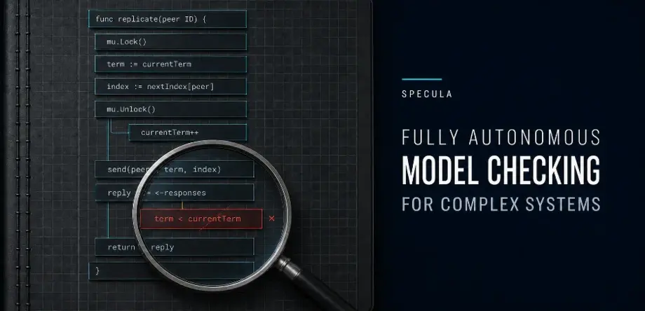
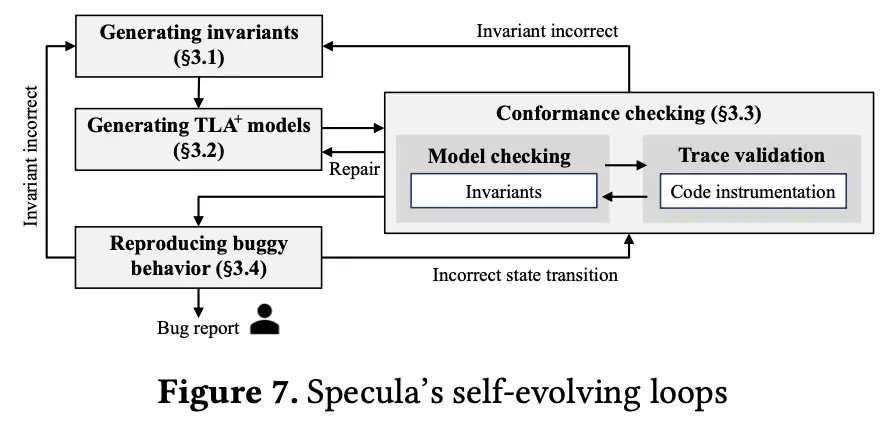
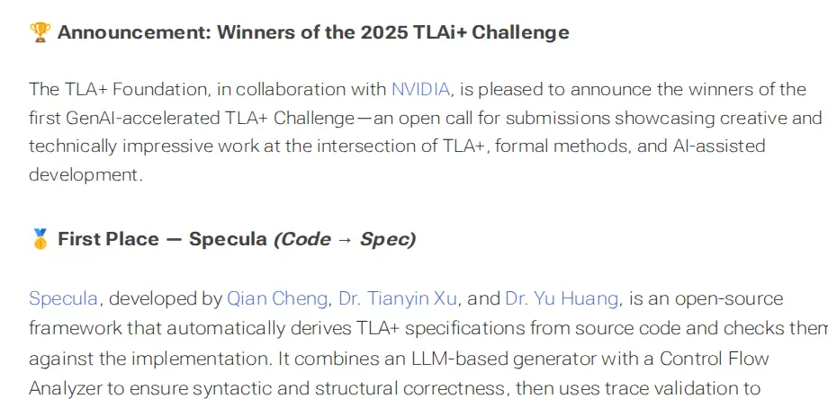

Blog
News, articles, and commentary about Specula from the systems and formal methods community.
News and writing about Specula

Aug 26, 2026 · 机器之心 · Chinese
Specula: Scaling Formal Specifications to Find Deep Bugs in Real-World Systems
This Chinese-language feature introduces how Specula derives
formal specifications from real system code, continuously aligns
them with implementation behavior, and uses them to uncover and
reproduce deep bugs that ordinary testing can miss.
Read in Chinese ↗

Aug 12, 2026 · Murat Demirbas
Specula: Scaling formal specifications for autonomous model checking of system code
Murat Demirbas explains what makes Specula’s end-to-end approach
impressive, then examines open questions around composition and
system-level guarantees.
Read article ↗

Aug 12, 2025 · TLA+ Foundation
Specula wins first place in the 2025 TLAi+ Challenge
The TLA+ Foundation and NVIDIA recognized Specula’s Code → Spec
approach for deriving TLA+ specifications from source code and
checking them against the implementation.
Read announcement ↗
Written about Specula? Send us the link ↗